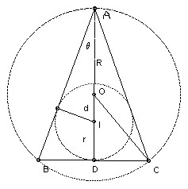
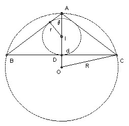
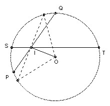
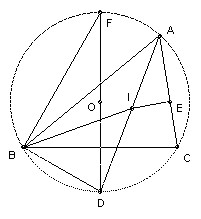

The radius of the circumcircle of an isosceles triangle is R and the radius of its inscribed circle is r. Prove that the distance between the two centers is √(R(R - 2r)).
Solution
|  |  |
Let the triangle be ABC with AB = AC, let the incenter be I and the circumcenter O. Let the distance IO be d, taking d positive if O is closer to A than I, negative if I is closer. Let the ∠OAB be θ.
Then r = (R + d) sin θ, and r + d = R cos 2θ. It helps to draw a figure to check that this remains true for the various possible configurations. Using cos 2θ = 1 - 2 sin2θ, we find that (d + R + r)(d2 - R(R - 2r)) = 0. But OI < OA, so d is not - R - r. Hence result.
Comment.

This result is known as Euler's formula and is true for any triangle. Suppose two chords PQ and ST of a circle intersect at I. Then PIS and TIQ are similar, so PI·IQ = SI·IT. Take the special case when ST is perpendicular to OI, where O is the center of the circle, then SI·IT = SI2 = R2 - OI2, where R is the radius of the circle, so PI·IQ = R2 - OI2.

Now let O be the circumcenter, I the incenter of an arbitrary triangle ABC. Extend AI to meet the circumcircle again at D. Then by the above IO2 = R2 - AI·ID. If E is the foot of the perpendicular from I to AC, then AI = r/sin(A/2). We show that DI = DB. ∠DBI = ∠DBC + ∠CBI = ∠DAC + ∠DBI = A/2 + B/2. ∠DIB = ∠IAB + ∠IBA = A/2 + B/2. Hence ∠DBI = ∠DIB, so DI = DB, as claimed. Take F on the circle so that DF is a diameter, then ∠DFB = ∠DAB = A/2, so DB = 2R sin A/2. Thus IO2 = R2 - r/sin(A/2) 2R sin(A/2) = R2 - 2Rr.

Solutions are also available in: Samuel L Greitzer, International Mathematical Olympiads 1959-1977, MAA 1978, and in István Reiman, International Mathematical Olympiad 1959-1999, ISBN 189-8855-48-X.
© John Scholes
jscholes@kalva.demon.co.uk
21 Sep 1998
Last corrected/updated 24 Sep 2003